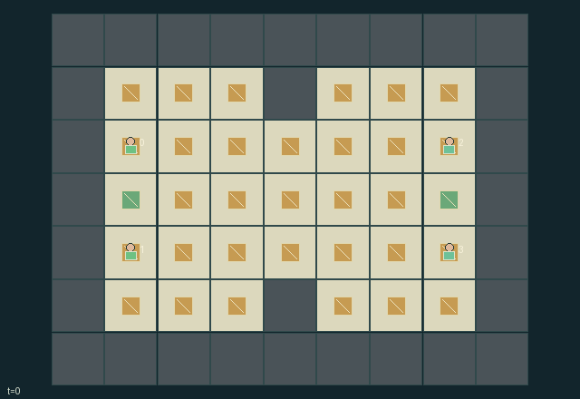

GI095 · Copper Relay

Two pairs of teammates compete to accumulate 12 relay pulses through physically adjacent supply conduits. Both relay sites may be captured by either team.
Identity and original contract
4 independently actionable roles; 9 discrete commands per role; 393 native observation columns per role; original horizon 80 steps. Declared per-step reward range: -1 to 1. Observation regime: fully_observable.
Source SHA-256: 2040229c883b0abaa228b1d952c982d6fa7fb453b0371148dd299504e6a88af3
The objective, rewards, population, map and horizon remain original. A preview is not a success claim.
Objective and gameplay
Two pairs of teammates compete to accumulate 12 relay pulses through physically adjacent supply conduits. Both relay sites may be captured by either team.
Building costs 2 carried units, repairing or cutting costs 1, handoffs require paired consent, and linked restocking drains shared team stock. Enemy occupation breaks connectivity immediately; isolated nonhome conduits decay every third tick. Defending a relay's tile can deny enemy occupation.
- Connect owned conduit cells by cardinal adjacency to your home. Enemy occupation cuts the connection at that cell.
- Laying a conduit costs 2 supply. Repairing it or cutting a nearby enemy conduit costs 1. Home hardware is indestructible but can be occupied.
- Two adjacent teammates choosing transfer shift one unit from the richer pack to the poorer pack, once per participant per tick.
- Restock by up to 2 through a connected friendly conduit; teammates draw from the same finite stock.
- Every third tick disconnected nonhome conduits lose durability. Every fourth tick connected owned relay sites produce pulses and each stock gains one unit.
- Each role receives half its team's pulse count minus half the opponent's. First reaching 12 ends play, preserving simultaneous ties.
- Displayed supply and contention are actual state. No performance or strategy result is claimed.
Ending: Any team reaches at least 12 cumulative pulses, including a simultaneous tie. Horizon 80 otherwise. No unique winner is fabricated for ties.
Action timing: Every integer command in [0,U) is legal for every role before joint termination. Geometrically blocked or unavailable operations are deterministic failed attempts. Out-of-range commands become action 0. In absorbing states only action 0 is legal; raw_step ignores all supplied actions and preserves terminal state.
What this game explores
Resource commons & externalities: An action changes a persistent resource or burden that another role also encounters. Compare extraction with maintenance and record the downstream resource trajectory.
Joint transport & shared access: Positions, load geometry, occupancy and persistent access constrain whose action can succeed next. Distinguish physical handoff, shared controls and simultaneous force from a cosmetic cooperation label.
Team opposition & interception: Cooperation within a team can coexist with opposition between teams. Preserve team membership, capture and possession rules, and report each team's outcomes instead of assuming a single shared return.
These are questions supported by rule structure, not observed learning effects.
Play it: operating walkthrough
crucibles play --game gi095Keep Python running and open its printed address. Select this game, set a seed and press Create session. The game itself is always English.
Assign a role range to Host with Assign / take over, or Assign all roles. Invite a second participant with Create player invitation, then assign a disjoint subset. Every original role is available.
For every owned role choose a legal command and press Queue. Arrow keys / WASD queue a declared directional action for the current role camera when available. Space or Advance one joint step advances everyone together. Non-directional games use the selectors.
Unqueued roles use the labelled untrained uniform-legal policy. Take over or release roles before the next step without resetting. Full-state debug is privileged and permanently logged; role cameras preserve permissions. Close the session to retain logs. Server restart does not restore sessions.
Complete command reference
IDs and English labels exactly match the manifest. Availability depends on role, resources, location and phase. An available action can still have no productive effect.
0·Wait
1·Move north
2·Move east
3·Move south
4·Move west
5·Lay neutral conduit or repair friendly conduit
6·Cut lowest-index nearby enemy conduit
7·Offer or receive adjacent teammate supply
8·Restock through connected friendly conduit
Roles and capability identifiers
These original role names describe capabilities, not interchangeable skins. Check each owned role's legal selector before planning handoffs.
agent_0·West team 0 north starter
agent_1·West team 0 south starter
agent_2·East team 1 north starter
agent_3·East team 1 south starter
Information and observation permissions
All state is public and repeated in every role observation with an own-role one-hot. Ownership, supply links, occupation, stocks, pulses and map are actual kernel state. Every active site and agent is visible to all roles; rocks have inactive site masks.
The GIF is full-state debug and may reveal hidden entities or private state. Train on obs[agent], not the picture, state tree or another role's private row. Field slices and visibility are in the original manifest.
Reinforcement-learning integration
import jax
from crucibles_jaxmarl import make
env = make("gi095")
key = jax.random.PRNGKey(0)
key, rk, ak, sk = jax.random.split(key, 4)
obs, state = jax.jit(env.reset)(rk)
actions = env.sample_actions(ak, state)
obs, state, rewards, dones, info = jax.jit(env.step_env)(sk, state, actions)
done = dones["__all__"]Observations are float32 vectors of width 393; actions are scalar int32; masks have 9 entries. Supply all 4 roles each transition. Masked sampling is an engineering reference, not a trained learner.
step_env retains terminal data without reset. step performs outer autoreset and keeps terminal data in info["raw_state"] and info["raw_observation"]. Use dones["__all__"] for episode boundaries; separate completion, failure and time limit in analysis.
JIT or vmap equal identities and shapes. Split independent reset, policy and transition keys. Group different shapes explicitly; do not shrink the population or horizon. Host rendering stays outside training.
Training questions and fair evaluation
Define valid completion from the objective before fitting. Preserve original rewards and also report real deliveries/services, losses, resource state, unresolved episodes and per-role returns. Animation is not a reward signal.
An action changes a persistent resource or burden that another role also encounters. Compare extraction with maintenance and record the downstream resource trajectory.
Positions, load geometry, occupancy and persistent access constrain whose action can succeed next. Distinguish physical handoff, shared controls and simultaneous force from a cosmetic cooperation label.
Cooperation within a team can coexist with opposition between teams. Preserve team membership, capture and possession rules, and report each team's outcomes instead of assuming a single shared return.
Compare memory, communication or centralized critics under matched actor information. Declare critic access; keep actor inputs role-filtered. Match partner/opponent distributions, masks, compute and checkpoint selection. Final tests never enter fitting or selection.
Independent training runs or source-pairing blocks are inferential units; episodes from one policy are not independent training replications. Save hashes, keys, versions, device, time and cost. Negative, zero, failed and indeterminate outcomes are valid. No trained checkpoint or target score is supplied.
Classification and evidence
Overlapping editorial labels are reading aids, not proof of novelty, difficulty, strategic equivalence or learning effects.
- Resource commons & externalities
- Evidence
manifest.task.objective: Two pairs of teammates compete to accumulate 12 relay pulses through physically adjacent supply conduits. Both relay sites may be captured by either team.
- Joint transport & shared access
- Evidence
manifest.task.objective: Two pairs of teammates compete to accumulate 12 relay pulses through physically adjacent supply conduits. Both relay sites may be captured by either team.
- Evidence
manifest.task.interaction: Building costs 2 carried units, repairing or cutting costs 1, handoffs require paired consent, and linked restocking drains shared team stock. Enemy occupation breaks connectivity immediately; isolated nonhome conduits decay every third tick. Defending a relay's tile can deny enemy occupation.
- Evidence
manifest.actions.5: Lay neutral conduit or repair friendly conduit
- Team opposition & interception
- Evidence
manifest.task.objective: Two pairs of teammates compete to accumulate 12 relay pulses through physically adjacent supply conduits. Both relay sites may be captured by either team.
- Evidence
manifest.task.interaction: Building costs 2 carried units, repairing or cutting costs 1, handoffs require paired consent, and linked restocking drains shared team stock. Enemy occupation breaks connectivity immediately; isolated nonhome conduits decay every third tick. Defending a relay's tile can deny enemy occupation.
- Evidence
manifest.actions.6: Cut lowest-index nearby enemy conduit
Source, receipts and preview limits
The world-only English GIF replays saved untrained legal actions through the original kernel. At most 25 actual endpoints include initial and terminal state; no invented interpolation. It is full-state debug, not the role observation.
Original source, observation slices, manifest and mechanism
Native receipt · Presentation receipt
Engineering passes do not establish learning. Nonzero floating differences remain recorded and undetermined; no new tolerance was introduced. Human scores remain unverified.